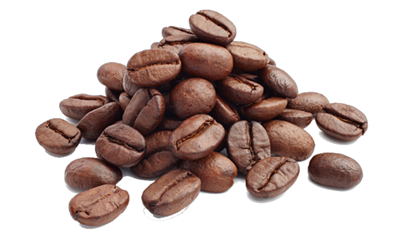

Perbedaan Kopi Robusta dan Arabika
Apa Itu Kopi Robusta?

Perbedaan Rasa Kopi Arabika vs Kopi Robusta
Saat mendengar Arabika dan Robusta, apa yang ada di benak Anda? Biasanya, kami akan mendapatkan jawaban seperti ini: “Arabika itu manis, Robusta itu pahit,” atau “Arabika itu harganya mahal, kalau Robusta lebih murah.”
Kedua jawaban di atas memang benar adanya. Sebenarnya, apa yang membuat Arabika dan Robusta begitu berbeda? Kali ini kami akan mengulas lebih dalam soal perbedaan kedua jenis kopi ini.
Kopi Arabika

Jangan tertipu dengan namanya, Arabika adalah jenis kopi yang berasal dari dataran tinggi Ethiopia Barat. Kenapa namanya disebut Arabika? Menurut sebuah sumber, kopi ini dinamakan Arabika karena pada abad ke-7, biji kopi ini dibawa sebuah daerah dataran rendah di Arab.Cara Menikmati Kopi Arabika
Kopi Arabika, dengan rasa manis dan kompleksnya, menjadi favorit di kalangan pecinta kopi. Untuk menikmati kopi Arabika yang sempurna, berikut adalah beberapa langkah sederhana yang dapat Anda ikuti:
- Pilih biji kopi Arabika berkualitas tinggi dengan karakteristik rasa yang sesuai dengan preferensi Anda.
- Giling biji kopi sebelum digunakan untuk mendapatkan kesegaran rasa yang optimal.
- Seduh kopi menggunakan metode yang Anda sukai, seperti pour-over, french press, atau espresso.
- Perhatikan suhu air dan waktu ekstraksi untuk menciptakan kopi dengan cita rasa yang seimbang.
- Nikmati secangkir kopi Arabika dengan kesadaran penuh, nikmati setiap nuansa rasa yang ditawarkan.
Fakta Menarik tentang Kopi Arabika
Beberapa fakta menarik tentang kopi Arabika yang mungkin belum Anda ketahui:
- Arabika memiliki kadar kafein
Bagaimana dengan Kopi Robusta?
Berbeda dengan Arabika, kopi Robusta memiliki karakteristik yang mencirikan kekuatan dan keberanian. Meskipun sering dianggap sebagai kopi dengan rasa yang lebih pahit, Robusta memiliki penggemar setia yang menghargai kekhasannya.
Cara Menikmati Kopi Robusta
Bagi pencinta kopi yang menyukai kekuatan dan keintiman rasa, kopi Robusta bisa menjadi pilihan yang memuaskan. Berikut adalah beberapa tips untuk menikmati kopi Robusta dengan baik:
- Pilih biji kopi Robusta berkualitas tinggi untuk mendapatkan pengalaman rasa yang terbaik.
- Gunakan gilingan yang tepat sesuai dengan metode penyeduhan yang Anda pilih.
- Eksplorasi berbagai metode penyeduhan seperti espresso, moka pot, atau kopi tubruk untuk mendapatkan rasa yang sesuai dengan selera Anda.
- Perhatikan proporsi antara kopi dan air serta suhu air saat menyeduh untuk menghasilkan rasa yang seimbang.
- Nikmati keberanian dan kekhasan rasa kopi Robusta dengan penuh penghayatan.
Fakta Menarik tentang Kopi Robusta
Untuk lebih mengenal kopi Robusta, berikut beberapa fakta menarik yang mungkin akan membuat Anda mengapresiasi jenis kopi ini lebih baik:
- Robusta memiliki kadar kafein lebih tinggi dibandingkan Arabika, memberikan efek stimulan yang lebih kuat.
- Kopi Robusta cenderung memiliki tingkat keasaman yang lebih rendah, menjadikannya pilihan yang cocok untuk mereka yang menyukai rasa pahit yang khas.
- Biji kopi Robusta berbentuk bulat dan ukurannya lebih kecil dibandingkan dengan biji kopi Arabika.
- Meskipun seringkali dianggap sebagai kopi yang lebih terjangkau, kualitas kopi Robusta yang baik tetap dapat memberikan pengalaman kopi yang memuaskan.
Dengan memahami perbedaan dan karakteristik unik antara kopi Arabika dan Robusta, Anda dapat membuat pilihan yang sesuai dengan preferensi rasa pribadi Anda. Apakah Anda lebih menyukai kompleksitas rasa kopi Arabika yang manis atau kekuatan pahit khas kopi Robusta, dunia kopi menyajikan berbagai pilihan yang dapat disesuaikan dengan selera masing-masing.